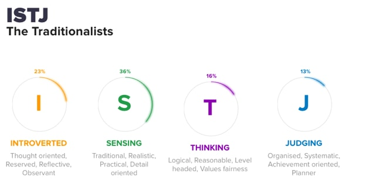
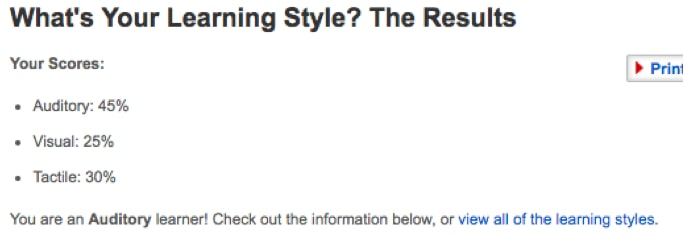
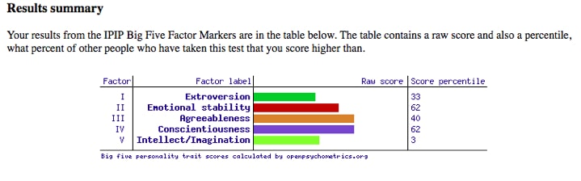

My name is Jaidyn Jong (s3657960), s3657960@student.rmit.edu.au and I am born in the western suburbs of Melbourne, Australia. My nationality is Maltese and Timorese and I speak fluently in English only. I have completed my primary, secondary and now currently, my bachelor’s degree in business, majoring in economics and finance. A hobby I am passionate about is tennis, which I have been playing ever since I was 7 years of age and which I also follow and keep up-to-date in the competitive scene itself.
When did my interest in IT start?
My interest in IT started from when I was as young as 5 years of age when I enjoyed spending time in front of the computer playing video games. From then onwards, I have always enjoyed my pastime in front of the computer (alongside other activities), playing different genres of video games, surfing the web, social media etc. I also find it fascinating to see how far computers have come since the mid 2000’s era which is the furthest I can recall to my first experience with a computer. I remember using a Hewlett Packard desktop machine back then and how it’s design was big and bulky and to what we perceive as a standard desktop in today’s age doesn’t even compare.
Why did I choose to come to RMIT?
I chose to study at RMIT because of the courses and flexibility which they had on offer and that they matched my interests in terms of what I was looking for in a degree and its potential employment outcomes. My course and its prerequisites required to do my degree also fitted in well to what I had already achieved in year 12, eg. Obtaining the ATAR requirements. I have previously studied IT in year 12 where I found it relatively interesting and somewhat fun working on databases and gaining basic knowledge in coding. Having scored average to high grades in the subject, I feel that doing the intro to IT course will enable me to develop my IT skills even further, which I can then apply into my everyday life where necessary, and could potentially put me in a better position when I graduate my course and find full-time work.
What do I expect to learn during my studies?
During my studies, I expect to gain the knowledge required for me to be competent in the workforce and to be able to know when to apply my skills which I would’ve learned at university into real life situations. This can be related to working and communicating with clients or a team to accomplish task projects or to how I manage my time as an individual to also accomplish work related tasks.
Job Description
This position for Commerce Commission New Zealand is looking for a candidate who is willing and enthusiastic to work as a senior economist for the New Zealand government. In this position, workers will undertake regulatory economic analysis on various sectors within New Zealand such as gas networks, telecommunication and electricity networks, to work on projects to help improve these sectors of the economy. Workers must be able to communicate effectively with fellow senior economists and will be a main contributor to projects.
Skills, qualifications and experience needed for the job
There are several skills needed in order to be successful in this position. The applicant must have a background working within the regulatory environment or has worked within competitive economics such as a regulated firm. Strong and fluent communication and team work skills are highly recommended for this position as you will be working alongside other experienced employees in group projects and must be able to display influencing skills to convey ideas. Alongside having a postgraduate degree in economics or closely related field, you must have a strong grasp on microeconomics and financial economics and be willing and enthusiastic to learn.
Skills, qualifications and experience I currently have
I am currently in my second year of tertiary education studying an economics related course (Economics and finance) which will be my first major qualification to set me up for a full-time position in the economics industry. With what I have learnt so far in my studies (including pre-tertiary), I have basic knowledge in microeconomics and an understanding of financial economics. I am fluent in English and can communicate effectively with my peers towards problem solving, project work, presenting etc. I will be passionate and enthusiastic towards the learning aspect of the job as economics is what I am interested in.
How will I obtain the skills, qualifications and experience for the job?
To obtain the skills/qualifications/experience necessary for this position, I must first complete my bachelor’s degree, where I will then undertake and complete my postgraduate degree, being the Master of Business (economics and finance). I would need to enhance my communication skills further by attending more group events, social activities to become more involved in conversations with people around me, to the point where I feel comfortable enough to engage in a conversation with anyone and anybody despite their age and level of education. I should also look and apply for internship positions relating to the fields of economics (or finance) where I may stand out more to other applicants for this position, as well as to give me a better understanding of how the industry operates.
Myers-Briggs Online Test
Learning Style Online Test
Big Five Personality Test
What do these results mean to me?
The results of these tests show me what type of a person I am, without me even being fully aware that that’s the person I am. However, some of the results do not come as a surprise to me, such as being detail oriented and being a visual learner as that is how I have always known myself to be even at a young age. These results can enable me to change the way and how I approach certain situations in my life now that I am aware of what I lack as a person, so that I adapt to becoming a more extraverted person, which can hopefully improve my chances of employability in the future. The results also tell me my preferred learning style (auditory/hand on learner), in which I should then use to my advantage in my studies where possible to help me understand content/theories better.
How will these results influence my behaviour in a team?
Knowing that my results reflect that I am a combination of a detail oriented, thought oriented and practical person, I may bring usefulness in a team when it comes to collecting ideas and thoughts and putting them down into practice meaning that I can do the ‘boring’ work which other people don’t necessarily like to do. However, this does not make me limited in a team in terms of contributing to discussion and giving my input on ideas and what I also believe to be right.
How should I take this into account when forming a team?
When forming a team, based on my results, I should look to be in a team with people with opposite characteristics as me. This is because having a variety of traits, personalities and learning styles will bring more diversity to the team as we will all be different in our own ways, leading to more opinions and ideas. For example, if a person with extraverted traits is in a team with introvert’s, they may be more inclined to discuss with extraverts because of their uplifting nature to bring discussion within a team, and will flow through to having more ideas for the team. In contrast, one may argue that you should form a team with those with similar personality traits which I believe is true to an extent, but not if it’s a team of introverted people because individuals may feel pressured to speak, and little to no discussion may occur.